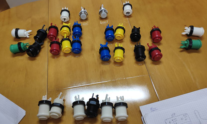
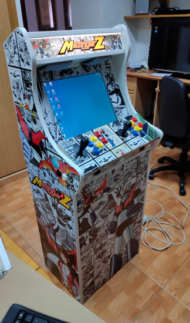

10 de Marzo
Pongo en marcha esta idea que llevaba años intentando encontrar un hueco. El confinamiento me lo ha proporcionado.
Pongo en marcha esta idea que llevaba años intentando encontrar un hueco. El confinamiento me lo ha proporcionado.
Empiezo a buscar información sobre como realizar la máquina y que es lo que necesito. Planos, materiales, componentes... siempre reciclando viejos equipos para que no se me suba el presupuesto.
Con toda la información y ,comenzando con los planos, empiezo a elaborar la lista de la compra.
Me pongo a comprar los tableros y a sacar las piezas
Me doy cuenta que aparte de piezas necesito alguna que otra herramienta.
Pido los controles de la maquina
Comienzo a revisar los ordenadores antiguos
Me llegan los controles de la maquina.
Mi padre se une al proyecto. Le entretiene mucho y pasamos tiempo de calidad
Clasifico las piezas que son validas para incorporar a la maquina
Decido que la maquina sea de tonos claros y que sea sobre Mazinguer Z. Nostalgia a tope.
Hacemos una primera prueba de ensamblaje parece que mas o menos encaja
Realizo los artes, toca bucear por bancos de imagenes para conseguir ese aspecto del anime
Con los artes terminados voy a imprimirlos en vinilo adhesivo. Tengo la suerte de tener un centro de impresión enfrente de mi casa
Despues de mucho esfuerzo conseguimos ensamblar el cuerpo del mueble dándole consistencia.
Con el cuerpo ensamblado pego los vinilos, esto va tomando forma
El fin de semana me he pasado estudiando como monto los controles, paso a la acción.
Ensamblo el sistema de audio, reciclando unos altavoces de bazar.
Conecto los cables a los circuitos, entre tanto cable es fácil perderse.
Después de probar consigo embutir los joysticks y los botones. El espacio disponible es muy limitado
Comenzamos con el video, utilizo un monitor TFT medio olvidado
Para poder incorporarlo en el soporte que hicimos tengo que desmontar todo el pie de la máquina, no cabe
Hemos tenido que hacer virguerias para encajar el monitor dejándolo totalmente fijo, no se va a poder retirar
Lijo los cantos para rematar la bartop, otra fase completada
Me parece que el espacio disponible dentro de la Bartop es insufiente. Comienzo a jugar al Tetris con las piezas
Mis temores se hacen realidad, no he tenido en cuenta que la tarjeta gráfica mide ¡28 cms!. Despues de mucho probar toca aceptar que no es viable.
Tras la frustación inicial, empiezo a considerar alternativas. Hay que sacrificar que sea compacta pero tampoco que no sea portable.
He decidido reciclar el hardware, lo voy a alojar en un pie hecho a medida.
Recibo animos de la tienda de bricolaje, se encuentran entusiasmados con la maquina.
Me pongo a diseñar los artes del pie
Comienzo a ver que componentes electricos necesito
El pie que he realizado va a alojar el hardware de manera modular en bandejas donde se encontraran los componentes
Recopilo todo el material que he reciclado, es momento de encajar las piezas Hard
No pensaba que tenia que ponerme con electricidad pero aqui me tienes... comprando pulsadores, y fabricando interruptores externos para que se comporte como cualquier arcade
Comienzo a conectar los elementos esenciales para comprobar que no me he cargado nada con tanta modificación
Primera prueba funcional. A ver si enciende... crucemos los dedos.....
Tras la primera prueba exitosa me pongo a montar todo de manera definitiva
Un poco mas de bricolaje para acoplar la fuente y los interruptores.
Antes de conectar todo coloco los vinilos en el pie, ¡que bien queda!
Ya se encuentra todo en su sitio.... Y funciona
Me llega el embellecedor (u-molding) lo voy colocando con cuidado, queda muchisimo mejor
Empiezo con el software, decido meter windows 7 dado el hardware de la maquina
Termino de configurar el sistema y calibrar los joysticks, la parte de mueble se encuentra terminada.
Con todos los remates realizados la maquina arranca!!!
Decido que la maquina abarque desde arcade hasta consolas de 64bits
Aunque no lo parezca cada sistema es un mundo, toca aprender a configurar cada uno de los emuladores
Al final he conseguido reunir todos los sistemas en un front-end, realmente es un trabajo de chinos
No hay mayor satisfaccion como una idea se ha hecho realidad y que tu gente disfruta de ella